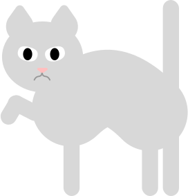
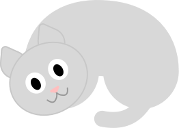

Cats
- I love cats -
I'm thankful for living on
a planet that has cats
I'm thankful for living on
a planet that has cats
There are many types of cats;
There are normal cats.
And Angry cats.
And chill cats.
All cats are special.
You should probably get one!